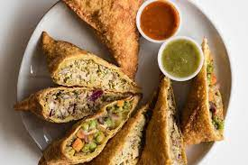

sambusa recipe

Embark on a culinary journey to Africa with the tantalizing flavors of Sambusa. These crispy and savory triangular
pastries are a popular street food in many African countries, known for their delicious fillings and fragrant spices.
Prepare to indulge in a delightful snack that combines a flaky exterior with a mouthwatering filling, creating a burst
of flavors with every bite. Follow the recipe below to create your own batch of irresistible African Sambusas.
ingredients
For the dough:
- 2 cups all-purpose flour
- 1/2 teaspoon salt
- 1/2 teaspoon ground cumin
- 1/2 teaspoon ground coriander
- 1/4 cup vegetable oil
- 1/2 cup warm water
For the filling:
- 1 tablespoon vegetable oil
- 1/2 cup finely chopped onion
- 2 cloves garlic, minced
- 1/2 pound ground beef or lamb
- 1 teaspoon ground cumin
- 1 teaspoon ground coriander
- 1/2 teaspoon turmeric
- 1/2 teaspoon paprika
- 1/2 teaspoon salt
- 1/4 teaspoon black pepper
- 1/4 cup chopped fresh cilantro
- Oil for frying
Steps And Procedures
- In a large mixing bowl, combine the flour, salt, cumin, and coriander for the dough. Gradually add the vegetable oil
while mixing with your hands until the mixture resembles coarse crumbs.
- Slowly pour in the warm water and knead the dough until it becomes smooth and elastic. Cover the dough with a damp
cloth and let it rest for 30 minutes.
- While the dough is resting, prepare the filling. Heat the vegetable oil in a skillet over medium heat. Add the
chopped onion and minced garlic, and sauté until they become translucent.
- Add the ground beef or lamb to the skillet and cook until browned, breaking it up with a spoon as it cooks.
- Stir in the ground cumin, ground coriander, turmeric, paprika, salt, and black pepper. Cook for an additional 2-3
minutes to allow the flavors to meld together.
- Remove the skillet from heat and stir in the chopped cilantro. Let the filling cool completely.
- After the dough has rested, divide it into small balls, about the size of a golf ball.
- On a lightly floured surface, roll out each ball into a thin circle or oval shape.
- Place a spoonful of the cooled filling onto one half of the dough circle.
- Fold the other half of the dough over the filling to create a triangular shape. Press the edges firmly to seal the
Sambusa.
- Repeat the process with the remaining dough balls and filling.
- In a deep skillet or frying pan, heat oil over medium heat. Fry the Sambusas in batches until they turn golden brown
and crispy, about 3-4 minutes per side.
- Once cooked, transfer the Sambusas to a paper towel-lined plate to drain any excess oil.
- Serve the African Sambusas hot as a delightful appetizer or snack. They can be enjoyed on their own or paired with
chutney or sauce of your choice.